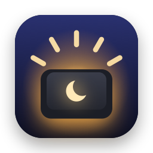

F5
F6
Before
On older MacBooks, the keyboard backlight sat right on F5 and F6 – one press, done.
Try it
Click F5 or F6, hold the key down or use ← and →. Hold ⌥⇧ for fine steps. The settings window works too.
Click F5 or F6.
Why?
On older MacBooks, the keyboard backlight sat right on F5 and F6 – one press, done.
Those keys now hold Dictation and Do Not Disturb. Keyboard brightness is only a click away in Control Center.
Back on F5 and F6: left darker, right brighter, like before. The app intercepts Dictation and Do Not Disturb for this. If you like, you can assign other keys.
Features
Each press changes the brightness by one of 16 steps, like before. Hold ⌥⇧ for quarter steps. Holding a key repeats at a comfortable pace.
Symbol and 16 segments, bottom center on the screen the mouse is on. Don't need it? Turn it off.
A bar with five dots in a semicircle. The dots light up with the brightness – a glance up is all it takes.
Click “Change”, press a key, done. “Default” restores F5 and F6. Works with and without “Use F1, F2, etc. keys as standard function keys”.
Assigned keys are intercepted before macOS sees them – Dictation and Do Not Disturb stay quiet. All other keys pass through unchanged.
Hide the menu bar icon and the keys keep working. Opening the app again – via Finder or Spotlight – brings back the icon and settings.
Launch at login with a single checkbox. The app then runs quietly in the background – no Dock icon, no window popping up.
In bright light, the macOS automatic adjustment keeps the backlight off. That's why the first key press turns it off – if you like, it comes back on its own after a time you choose, from 5 minutes to 8 hours.
Under 1,000 lines of Swift, no dependencies, no network access. The source code is open on GitHub.
Download
A ZIP file with the ready-to-use app. No installer, no account.

Latest version · macOS 14 or later · Apple silicon and Intel · in five languages
Double-click the ZIP file to open it and drag KeyboardBacklight into the Applications folder.
The app isn't notarized by Apple, so macOS blocks the first launch. Close the message and allow the app here:
System Settings › Privacy & Security › Open Anyway
You only need to do this once.
Next, macOS asks for Accessibility access – without it, the keys can't be captured. Turn it on under:
System Settings › Privacy & Security › Accessibility › KeyboardBacklight
The app notices the permission by itself, no restart needed.
FAQ
It's the only way to capture F5 and F6 before macOS starts Dictation or toggles Do Not Disturb. Only the assigned keys are intercepted, all others pass through unchanged. The app has no network access whatsoever and doesn't store any input.
KeyboardBacklight isn't notarized by Apple – that would require a paid developer account. So macOS only launches the app once you allow it under System Settings › Privacy & Security with “Open Anyway”. The source code is open on GitHub, and every version is built from it automatically.
Download the new ZIP file and replace the app in the Applications folder. Accessibility access is kept.
Simply assign Darker and Brighter to other keys – then F5 and F6 go to macOS again. Or quit the app for a moment with “Quit”.
Just open the app again – via Finder, Spotlight or Launchpad. The icon and settings appear. Clicking outside closes the settings, and the icon disappears again.
That's the macOS automatic brightness. KeyboardBacklight turns it off on the first key press. If you've turned it back on via “Adjust to ambient light” – or “Turn back on after” has done so after the chosen time – it takes over again.
No. The keys send different signals depending on that setting – the default assignment covers both.
You need macOS 14 or later and a backlit keyboard. The app is built for Apple silicon and Intel and tested on a MacBook Air M3 with macOS 26. If it can't find a keyboard backlight, the settings window shows a notice.